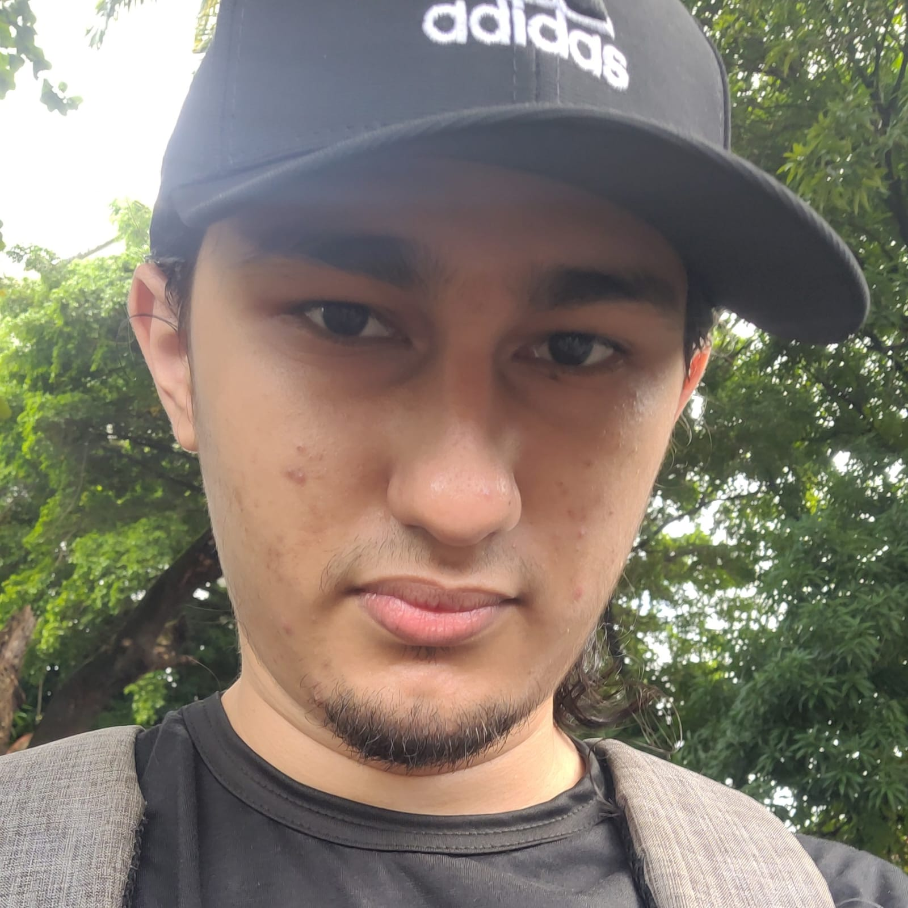

Autores e mantenedores do blog
Mateus Santos - (Bolsista Voluntário)

Área de atuação: Engenharia Reversa/Análise de Malware
Pesquisador de ameaças, mantenedor do blog e membro do RSI desde 2018.
Davi Chaves - (Bolsista Voluntário)
Área de atuação: Engenharia Reversa/Windows Internals/Malware
Atualmente cursando Ciência da Computação na UFC. Já desenvolvi diversos sites e aplicativos mobile, mas atualmente estou me especializando na área de segurança da informação, mais especificamente, na área de engenharia reversa/Windows Internals/Malware. Meus hobbies são programar, estudar japonês e tocar piano.